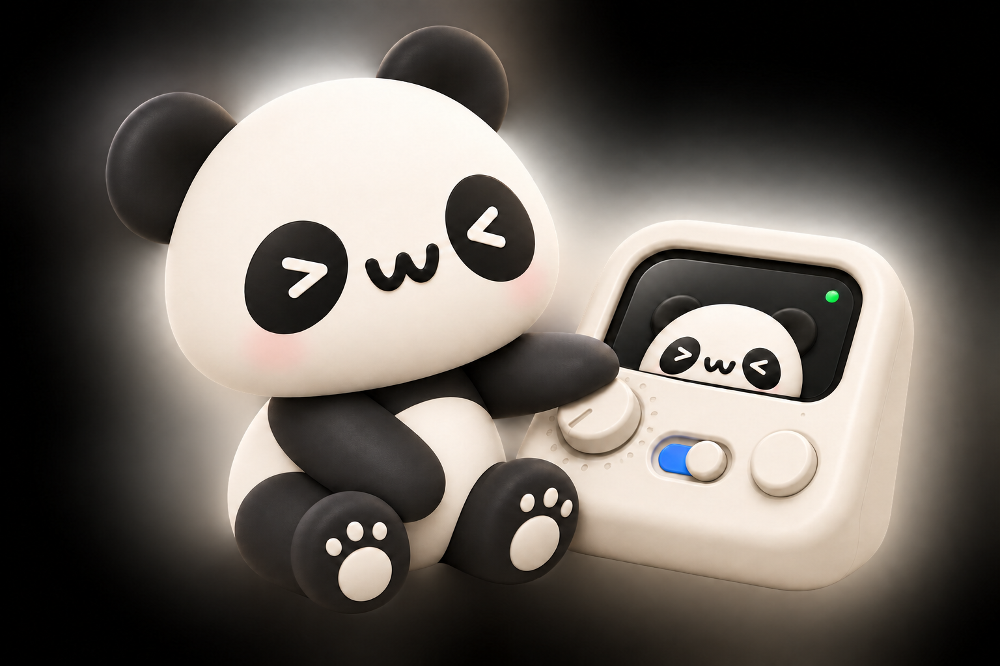
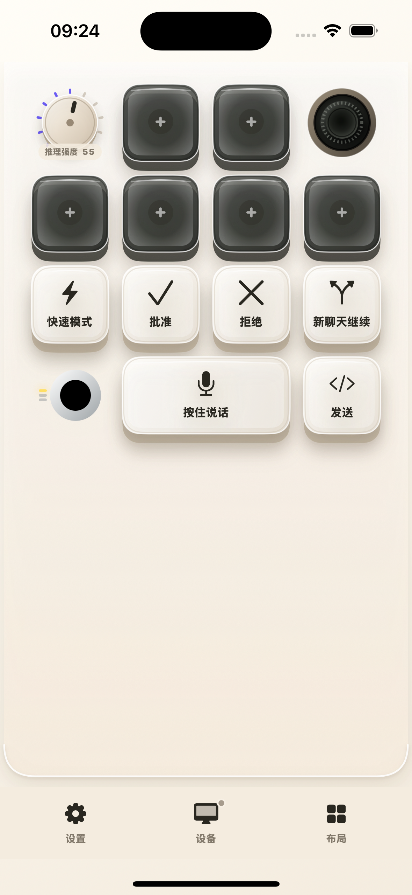
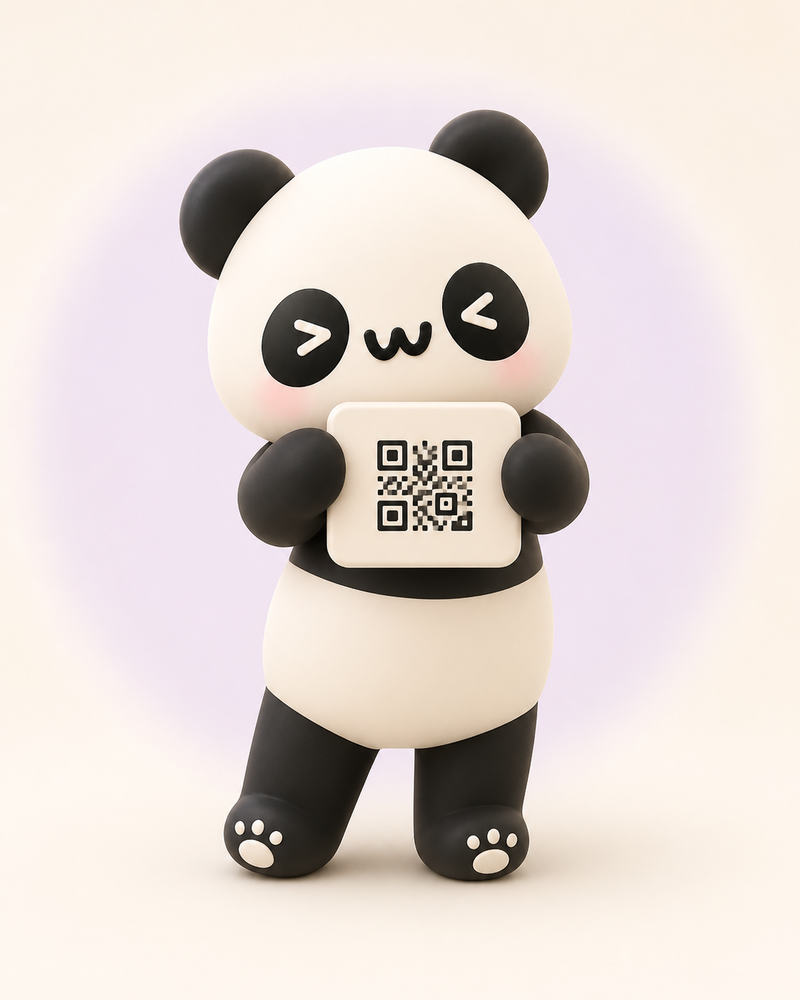

自由布局
移动、缩放和绑定动作，不受固定键位限制。
iPhone × Mac
扫码连接。把常用按键、旋钮和触控板放到手边，每套工作都能有自己的布局。
首个公证版本准备中 · macOS 13+


一块属于你的面板
按钮、旋钮、触控板、滑杆和状态组件可以自由组合。布局保存在 iPhone 上，需要时直接编辑。
移动、缩放和绑定动作，不受固定键位限制。
轻点、旋转、滑动和长按都有清晰反馈。
日常控制、Codex 和 Resolve 布局一划即换。

开始使用
打开 DMG，把奶猫妙控拖入“应用程序”。
按系统提示授权，让控制操作可以执行。
两台设备连同一 Wi‑Fi，扫一下菜单栏里的二维码。
切换工作
音量、亮度、媒体、应用切换和触控板。
Agent 状态、推理强度、语音和常用命令。
剪辑、修剪、播放、搜索旋钮和时间码。
Universal DMG 同时支持 Apple 芯片和 Intel Mac。